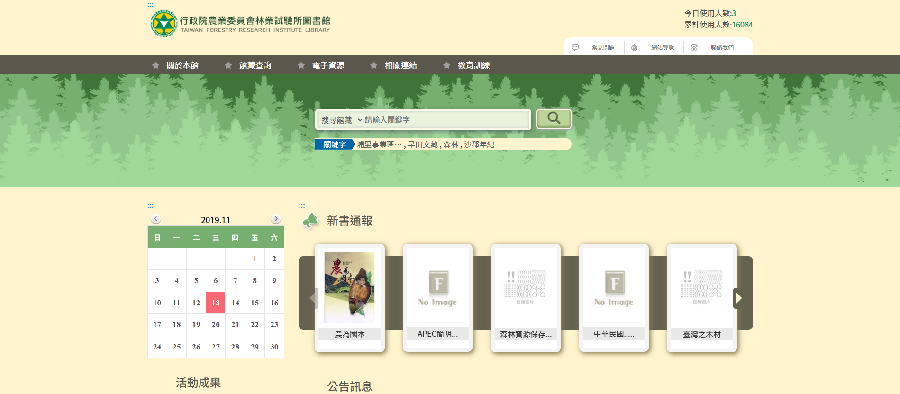
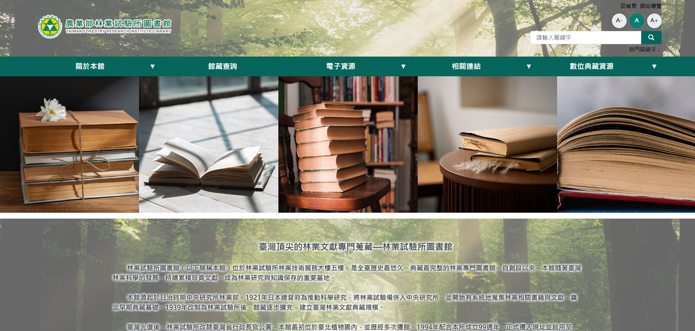
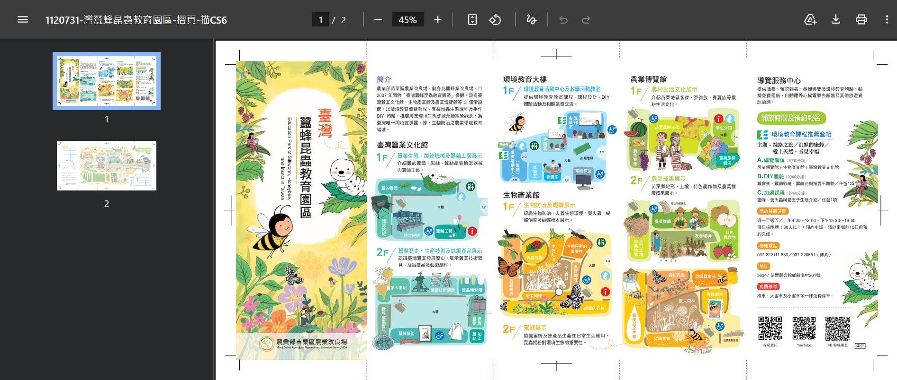
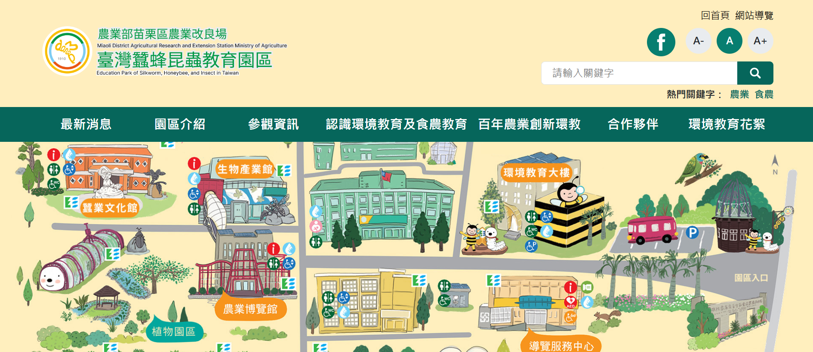
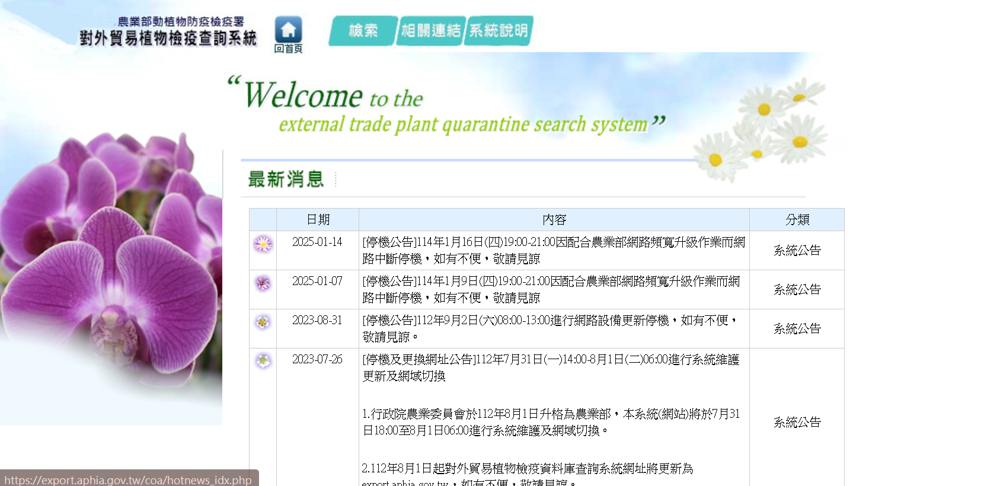
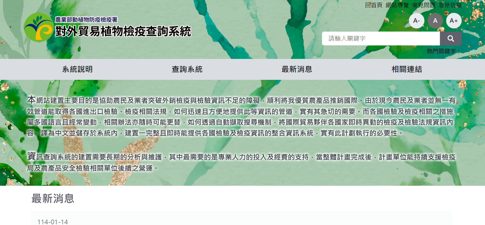
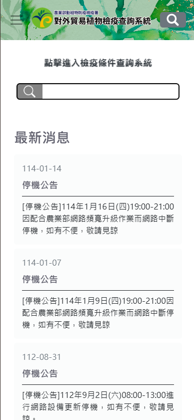
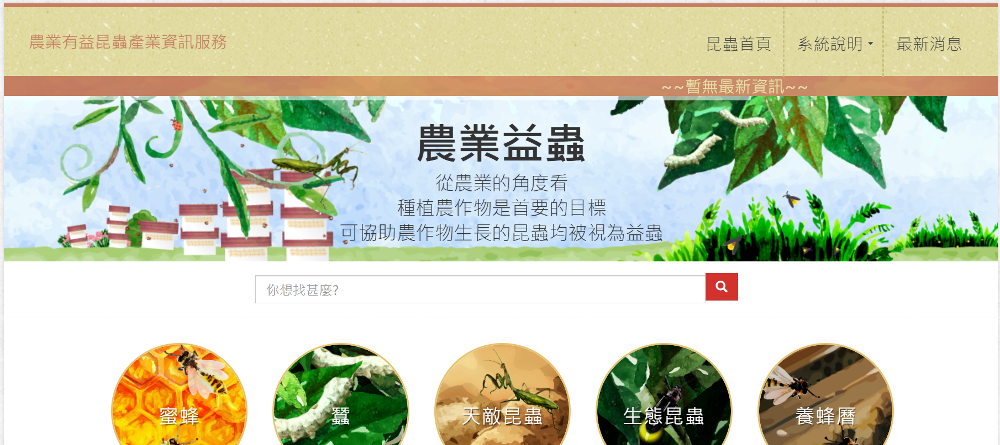
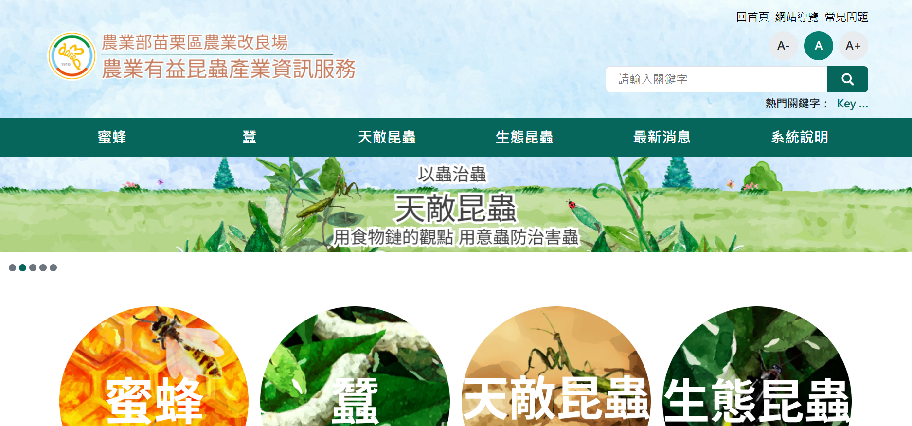

UI/UX Designer & Web Planner
三年網站改版與規劃經驗，從內容盤點、資訊架構到視覺設計，習慣在動手設計之前先想清楚使用者的目的。
SCROLL TO WORK
網站改版 · 政府機關
主導一個老舊圖書館網站的完整改版，從資訊架構重整、視覺設計到客戶確認，全程獨立執行。
我觀察到的問題
改版前的問題
我提出的改善方向
我的工作流程
從全站內容盤點開始，逐一整理每個頁面的欄位數量與資料類型，建立 Sitemap 與資料結構文件。設計完成後透過 Figma prototype 以 email 方式讓客戶確認，歷經多輪調整後定稿。
為什麼把搜尋框從首頁移除？
館藏電子書數量有限，搜尋結果稀疏反而讓人覺得資源很少。我將查詢功能整合進電子資源內頁，讓使用者在有脈絡的環境下搜尋，避免首頁給人錯誤的第一印象。
數位典藏資源為什麼值得放在首頁？
這個圖書館收藏了大量日治時期珍貴的林業文獻，是它獨特的館藏價值。不應該被埋在深層頁面，應該在首頁就讓訪客看見。
我負責的視覺設計範圍
Banner 設計、Logo 設計、各頁面 Header Image、相關單位連結圖片（將文字連結改為圖片卡片）。
客戶回饋
「上傳功能很方便，首頁變得很漂亮。」
改版前後對比


執行的 UX 流程
從零建置 · 政府機關
從一份園區摺頁出發，在客戶沒有明確需求的情況下，獨立規劃資訊架構，並完成完整的視覺設計。
挑戰
客戶沒有任何網站規劃概念，只提供了一份園區摺頁。摺頁以「場館」為單位呈現資訊，是適合紙本的邏輯，但不適合直接套用到網站架構。整個資訊架構和視覺設計都需要從頭思考。溝通上，有幾次 email 回覆超過一個月，必須在資訊不足的情況下持續推進。
核心思考：從場館邏輯到使用者邏輯
我同時站在兩個視角思考：「使用者來這個網站想知道什麼？」以及「客戶希望使用者看到什麼業務內容？」從這兩個角度反覆推敲，經過五個版本的架構迭代，最終定案。
內容規劃
摺頁內容有限，我主動詢問客戶哪些現有文件可以補充網站。客戶提供一個未整理的 Google Drive 照片資料夾，我將所有照片依活動名稱分類，再篩選出最適合首頁的視覺素材。
當客戶沒有明確需求時，我怎麼推進？
主動規劃出具體的架構版本，讓客戶有東西可以反應。這樣的方式讓溝通從「你想要什麼」變成「這樣可以嗎？」，大幅降低溝通成本，也讓客戶更容易給出有用的回饋。
成果
視覺設計完成後，客戶沒有提出任何修改意見。這讓我意識到只要前期把使用者和客戶的雙重需求想清楚，設計方向自然不會偏差。
執行的 UX 流程
改版前後對比


多專案同時執行 · 系統遷移
入職初期同時執行三個改版專案，在系統限制的框架下，透過內容整理與無障礙優化，讓網站對民眾更易讀、更易用。
背景
這是我入職後第一批接手的專案，三個同時進行。主要工作是系統遷移，視覺上以原有網站為基礎，不做大幅更動。網站的資訊架構由我自行規劃，重心放在讓內容更好閱讀、更易使用。
我做的事
🔹 無障礙內容優化 — 調整文字大小單位、修正色彩對比比例、補充圖片替代文字（超過 75 字的說明額外補充在上下行），並請客戶確認內容正確性。
🔹 內容排版優化 — 重新整理所有頁面的文字排版，將重點資訊前置，引導民眾向下閱讀完整內容。
🔹 民眾信箱 + FAQ 功能規劃 — 規劃民眾詢問信箱，並建立 FAQ 集合體，讓民眾在寄信前可以先查閱常見問題。
系統限制下的替代方案：場館地圖連結
原網站以 SVG 圖片加點擊連結的方式呈現場館介紹，但新系統無法支援這個功能。我將場館內容重新整理進 Menu 導覽，並在排版上以重點前置引導民眾閱讀，確保資訊不因系統限制而流失。
執行的工作項目
查詢系統設計 · 開發中
面對 200GB 的龐大資料庫，重新設計查詢體驗，讓台灣廠商能快速找到出口植物產品所需的檢疫條件。
我觀察到的核心問題
舊版查詢系統是條件式的——選完國家才出現產品分類，選完分類才出現農產品清單。這種設計讓使用者不知道還有幾步才能找到答案。另一個問題是有些廠商想從產品反查可出口的國家，但舊系統只支援從國家開始查。
三個關鍵設計決策
① 全欄位一次顯示，取代條件式逐步展開
把所有篩選欄位同時呈現，讓使用者一眼看到整個查詢的全貌，消除「不知道還有幾步」的焦慮感。
② 即時搜尋，不需要按下搜尋按鈕
選擇國家或輸入關鍵字後，下方結果即時更新。無論是植物名稱或學名，使用者只要輸入部分文字就會立即出現所有相關結果，支援使用者不確定完整名稱或學名的搜尋情境。
③ 響應式設計：桌機與手機顯示不同內容
在系統套件限制下，透過 CSS 讓同一個元件在桌機版顯示系統說明文字，在螢幕寬度小於 767px 時自動切換成搜尋框圖片加連結，讓手機使用者進入網站後能立即找到查詢入口，不需要先閱讀說明。
最大的挑戰
每個國家的檢疫條件規定長短不一，無法用單一欄位格式容納。我花了較多時間與客戶逐一確認每個欄位的重要性，從使用者「需要知道什麼才能完成出口作業」的角度出發，整合重複或次要的欄位，讓查詢結果更聚焦。
執行的 UX 流程
改版前後對比



網站改版 · 進行中
這個案子是我處理過資訊架構深度問題中最複雜的一個，也讓我最清楚地感受到設計能力與執行環境之間的落差。
我診斷出的問題
過去的案子我也處理過資訊架構過深的問題，但這個網站是程度最深的一個——真正有價值的內容（養殖技術、生活史、授粉技術等）被埋在第四、五層之後。使用者必須一層一層點進去，而且在同一層的平行內容之間切換也非常困難，整個操作過程讓人感覺「永無止境」。內容用跳出視窗加下拉選單呈現，使用者沒有辦法一眼看到「這個分類下面有什麼」，只能一個一個點開來確認。
我的設計思考
把四個子分類同時攤開在同一頁
以蜜蜂養殖技術為例，舊版把「養殖技術」分成四個子分類，每個底下還有 12 個左右項目。我的方向是讓使用者進入頁面後直接看到所有子分類和項目，不需要猜、不需要點開，掃描一遍就知道要找的內容在哪裡。
遇到的限制：系統框架無法完整實現設計
目前使用的網站系統框架對版面有較多限制，無法完整實現卡片式視覺化導覽的設計。這個限制讓我持續思考如何在框架內找到替代方案，也讓我更清楚地意識到——要真正把設計做好，需要一個能夠實現設計決策的工作環境。
執行的 UX 流程
改版前後對比


我在網站行銷與規劃領域工作了三年，主要負責政府機關網站的改版與建置。從資訊架構、內容盤點到視覺設計，習慣在動手之前先想清楚使用者的目的。
目前正在往 UI/UX 設計師的方向發展，使用 Penpot 與 Inkscape 進行設計工作。
聯絡我